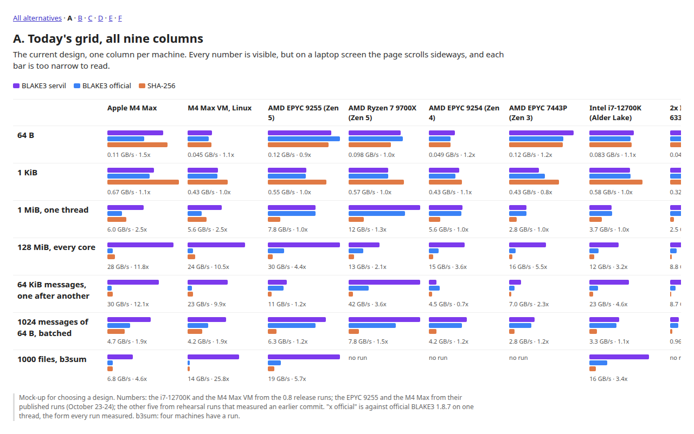
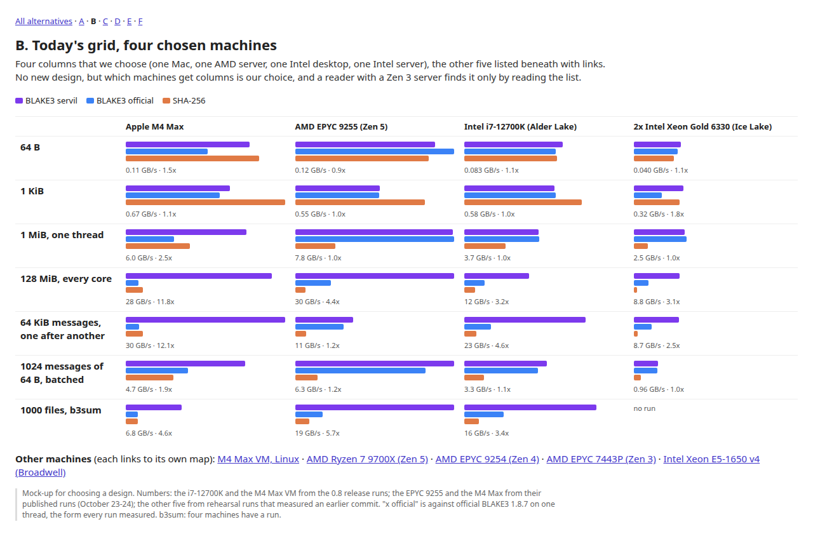
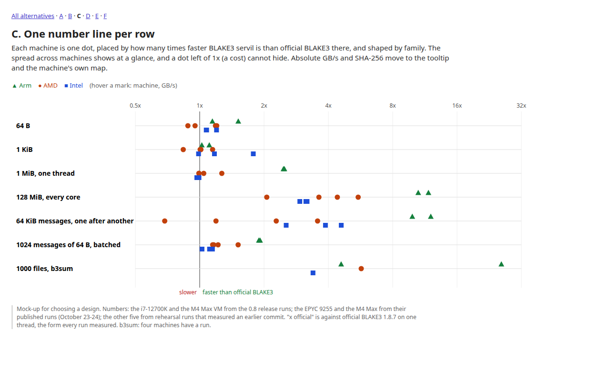
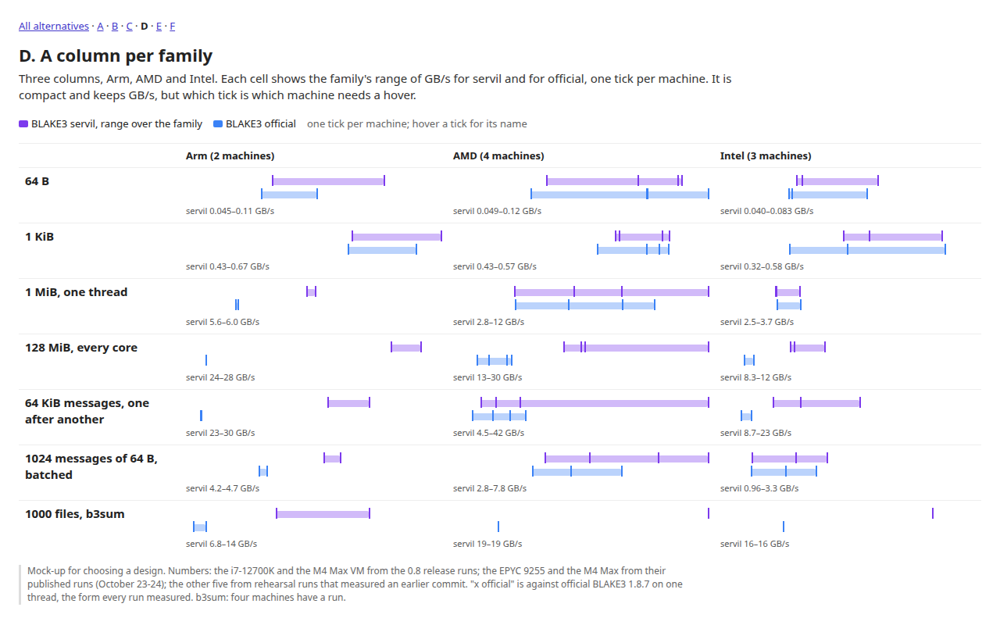
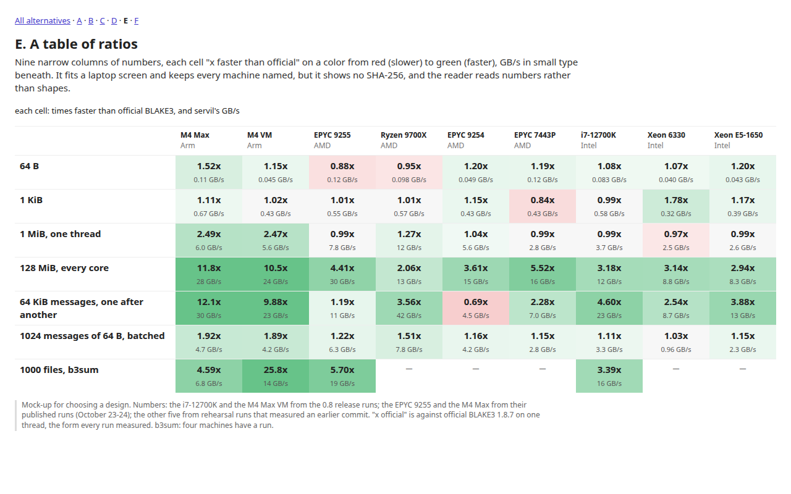
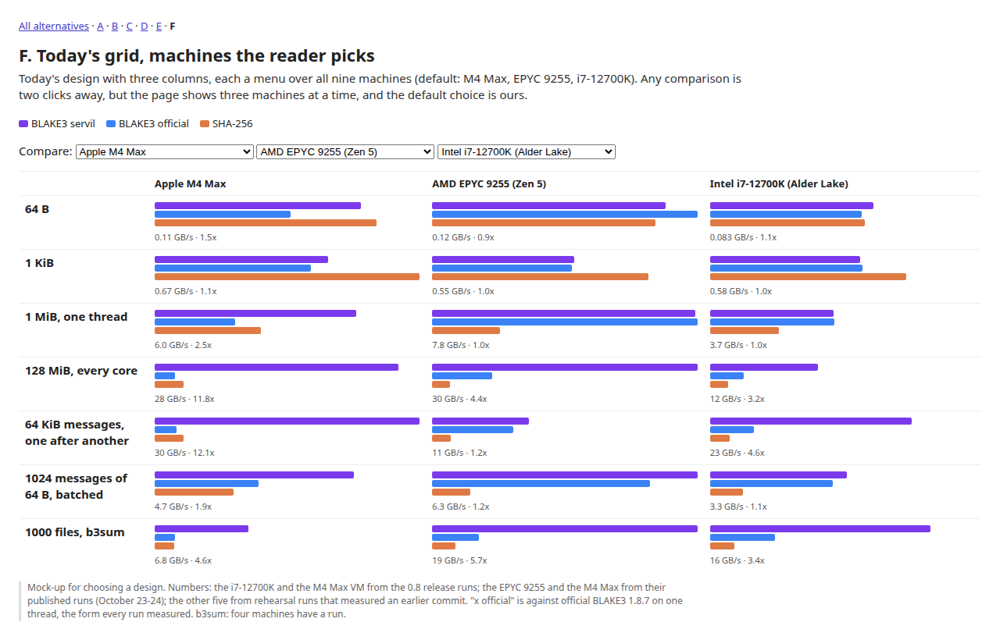

The overview has one column per machine, and it is full at four. Nine machines now have runs. Each design below shows the same seven cells for all nine. Click one to open it full size (C and F respond to the mouse).
Mock-up for choosing a design. Numbers: the i7-12700K and the M4 Max VM from the 0.8 release runs; the EPYC 9255 and the M4 Max from their published runs (October 23-24); the other five from rehearsal runs that measured an earlier commit. "x official" is against official BLAKE3 1.8.7 on one thread, the form every run measured. b3sum: four machines have a run.
The current design, one column per machine. Every number is visible, but on a laptop screen the page scrolls sideways, and each bar is too narrow to read.

Four columns that we choose (one Mac, one AMD server, one Intel desktop, one Intel server), the other five listed beneath with links. No new design, but which machines get columns is our choice, and a reader with a Zen 3 server finds it only by reading the list.

Each machine is one dot, placed by how many times faster BLAKE3 servil is than official BLAKE3 there, and shaped by family. The spread across machines shows at a glance, and a dot left of 1x (a cost) cannot hide. Absolute GB/s and SHA-256 move to the tooltip and the machine's own map.

Three columns, Arm, AMD and Intel. Each cell shows the family's range of GB/s for servil and for official, one tick per machine. It is compact and keeps GB/s, but which tick is which machine needs a hover.

Nine narrow columns of numbers, each cell "x faster than official" on a color from red (slower) to green (faster), GB/s in small type beneath. It fits a laptop screen and keeps every machine named, but it shows no SHA-256, and the reader reads numbers rather than shapes.

Today's design with three columns, each a menu over all nine machines (default: M4 Max, EPYC 9255, i7-12700K). Any comparison is two clicks away, but the page shows three machines at a time, and the default choice is ours.
